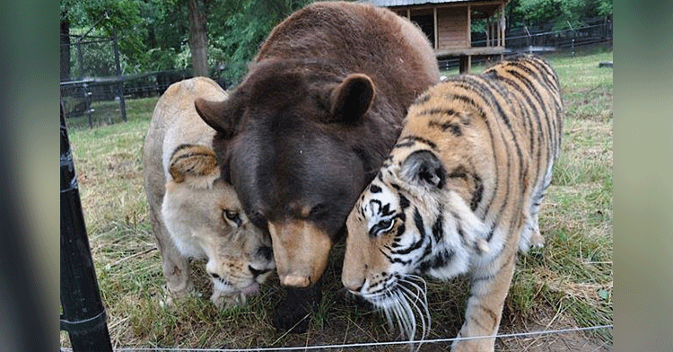

Lion, Tiger, And Bear Become Lifelong Friends After Being Rescued As Cubs.

Lions, tigers, and bears definitely aren’t meant to live as a pack. But not every animal has been through the trauma that forged the bond between three normally opposing male predators.
Back in 2001, police raided a drug dealer’s house in Atlanta, Georgia. In the basement, they came across a heartbreaking sight. There sat three terrified, malnourished, and parasite-ridden cubs that certainly didn’t belong in anyone’s home.
The African lion, Leo, had been stuffed inside a small crate with an open wound on his face. Shere Khan, the Bengal tiger, was emaciated, and the black bear, Baloo, was wearing a harness so small it had become embedded into his flesh.
But their nightmare was finally over; the Georgia Department of Natural Resources took them to
Noah’s Ark Animal Sanctuary, a nonprofit animal rescue in Locust Grove. There, they’d spend the rest of their days on a beautiful 250-acre property. They’d already been through too much in their short lives to ever be released back into the wild.
“When they were first brought to the sanctuary, Baloo, Shere Khan, and Leo were injured, frightened and clinging to one another for comfort,” curator Allison Hedgecoth told
HuffPost. And as they got more comfortable, they groomed each other, cuddled, and played together. Clearly, they were a bonded trio.
Sanctuary staff anticipated the need to separate the friends once they reached maturity, as they would likely grow apart. After all, it’s the natural order in the animal kingdom. But the trio, known as BLT (bear, lion, tiger), never left each other’s sides. The sanctuary ultimately decided to keep them together.
For 15 years, Baloo, Leo, and Shere Khan lived, slept, and ate in the same habitat. And after surviving such horror together, they couldn’t have been happier.
Baloo, the playful one, loved teasing Leo with gentle bites. And the affectionate Shere Khan could often be found snuggling up to either of his brothers.
“Even though they live in a three-acre enclosure, they’re usually within 100 feet of each other,” Allison told
Inside Edition. “That’s proof that they’re not just coexisting or cohabiting, they actually do enjoy each other’s company.”
Leo and Shere Khan spent the rest of their lives with Baloo before they passed away, respectively, in 2016 and 2018. Baloo was there for both of their burials — and a constant presence in their final days.
While everyone at the sanctuary is still heartbroken over their deaths, they find solace in knowing they gave all three a fantastic life together. And they’re making sure Baloo knows he isn’t alone.
Rest in peace, Leo and Shere Khan. The world will never forget your beautiful story of survival and friendship.
This video is short but it’s a sweet snapshot of just how devoted these brothers were. Don’t forget to
share with other animal lovers.
 Facebook
Facebook Facebook
Facebook Facebook
Facebook Facebook
Facebook Facebook
Facebook Facebook
Facebook Facebook
Facebook Facebook
Facebook